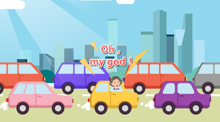
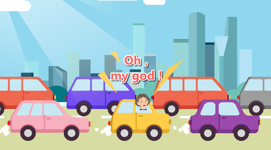
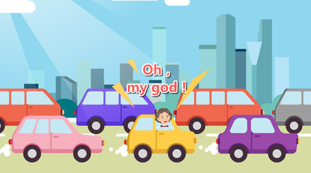

《FaceBank》简介
远程柜面是一种全新的银行服务模式和渠道，依托现代互联网远程技术等高科技技术手段在金融服务领域的广泛应用而实现的一种革命性突破。客户可使用经我行认证的专业智能电子设备，在线申请办理传统柜台业务，通过视频接通远程服务团队为客户提供信息咨询、身份核实、业务办理等专业服务。彻底颠覆了以物理网点为主的传统服务模式，极大地满足了客户“足不出户、随时随地、自助服务”的需求，为越来越多客户所接受。

远程柜面是一种全新的银行服务模式和渠道，依托现代互联网远程技术等高科技技术手段在金融服务领域的广泛应用而实现的一种革命性突破。客户可使用经我行认证的专业智能电子设备，在线申请办理传统柜台业务，通过视频接通远程服务团队为客户提供信息咨询、身份核实、业务办理等专业服务。彻底颠覆了以物理网点为主的传统服务模式，极大地满足了客户“足不出户、随时随地、自助服务”的需求，为越来越多客户所接受。